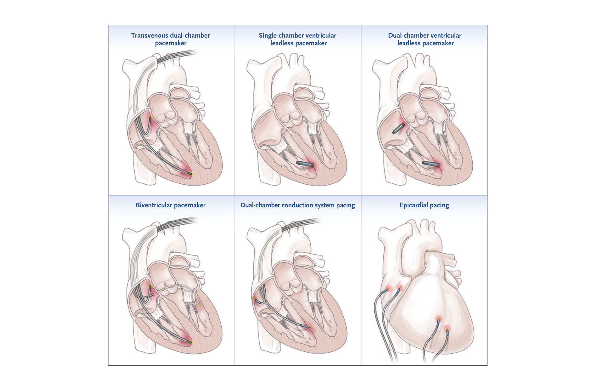
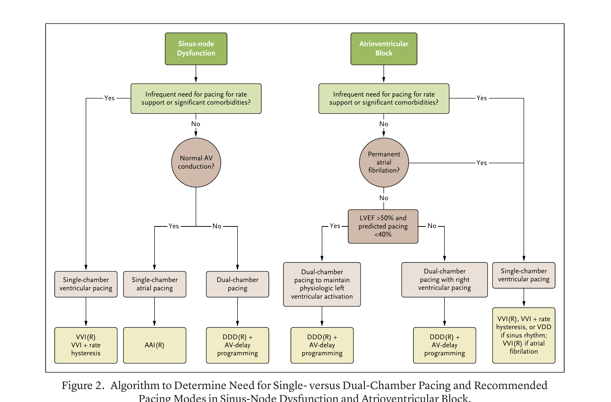

本ページで使用する略語一覧
| 略語 | 正式名称 — 日本語訳 |
| NBG | NASPE/BPEG Generic code — ペーシング命名規則コード |
| SND | Sinus-Node Dysfunction — 洞機能不全 |
| AV | Atrioventricular — 房室 |
| CRT | Cardiac Resynchronization Therapy — 心臓再同期療法 |
| CSP | Conduction System Pacing — 刺激伝導系ペーシング |
| LBBAP | Left Bundle-Branch Area Pacing — 左脚領域ペーシング |
| HBP | His-Bundle Pacing — ヒス束ペーシング |
| LVEF | Left Ventricular Ejection Fraction — 左室駆出率 |
| LBBB | Left Bundle Branch Block — 左脚ブロック |
| RBBB | Right Bundle Branch Block — 右脚ブロック |
| NYHA | New York Heart Association — ニューヨーク心臓協会（心不全機能分類） |
| ACC | American College of Cardiology — 米国心臓病学会 |
| AHA | American Heart Association — 米国心臓協会 |
| HRS | Heart Rhythm Society — 心臓リズム学会 |
| ESC | European Society of Cardiology — 欧州心臓病学会 |
| MRI | Magnetic Resonance Imaging — 磁気共鳴画像 |
| COR | Class of Recommendation — 推奨クラス（I=推奨/IIa=考慮すべき/IIb=検討可/III=非推奨） |
| LOE | Level of Evidence — エビデンスレベル（A=高/B=中/C=低） |
| QRS | 心電図のQRS複合（脱分極波形）、持続時間を ms で評価 |
SECTION 1 ペースメーカーの概要と基本構成
心臓ペースメーカーとは
ペースメーカーは徐脈性不整脈の管理において不可欠な医療機器であり、非可逆性の刺激伝導障害に対する唯一の根本的治療法である。心臓ペーシングは適切な心拍数と心拍応答を回復させ、血行動態を正常化して有効な循環を再確立する。全世界で年間100万台以上のペースメーカーが植込まれており、人口の高齢化と心血管疾患の増加に伴い、この数は増加し続けている。
従来の経静脈ペースメーカーは3つの主要コンポーネントで構成される：① パルス発生器（pulse generator）：電気刺激を生成する本体。② リード（leads）：刺激を心臓へ伝達する。③ 電極（electrodes）：心臓固有リズムをセンシングし、必要時に電気刺激を心筋へ伝達する。パルス発生器は通常、鎖骨下部の前胸壁（前大胸筋位置）に植込まれる。
増加傾向継続中
発生器・リード・電極
根本的治療法
SECTION 2 NBGコード：ペーシング命名規則
NBGコードの仕組み（Table 1）
1974年に米国心臓協会（AHA）と米国心臓病学会（ACC）が導入したコーディングシステムが、後にNASPE（北米ペーシング電気生理学会）とBPEG（英国ペーシング電気生理学会）によって改訂された。このNBGコードは最大5文字でペースメーカーの機能を表す。文字数が5未満の場合、省略された位置は「O（なし）」とみなす。
| 位置 I | 位置 II | 位置 III | 位置 IV | 位置 V |
|---|---|---|---|---|
| ペーシング部位 | センシング部位 | センシング応答 | レートモジュレーション | マルチサイトペーシング |
| A＝心房 V＝心室 D＝両方 O＝なし |
A＝心房 V＝心室 D＝両方 O＝なし |
I＝抑制 T＝トリガー D＝両方 O＝なし |
R＝レートモジュレーション O＝なし |
A＝心房 V＝心室 D＝両方 O＝なし |
SECTION 3 ペーシングモードの選択と特性
主要ペーシングモードの特性と適応
最適なペーシングモードの選択には、患者の基礎不整脈、運動耐容能、変時応答能、左室機能、合併症を考慮する。各モードの特性を以下に示す。
| モード | 動作 | 主な適応 | 注意点 |
|---|---|---|---|
| AAI/AAIR | 心房のみペーシング＆センシング。固有心房活動検出時は抑制 | 洞機能不全（SND）でAV伝導が正常 | AV伝導障害発生時はペーシング不全リスク |
| VVI/VVIR | 心室のみペーシング＆センシング。固有心室活動検出時は抑制 | 永続性心房細動合併徐脈 リードレスペースメーカー |
AV非同期→ペースメーカー症候群のリスク |
| DDD/DDDR | 心房・心室双方ペーシング＆センシング。AV同期を維持 | AVブロック・洞機能不全（AV伝導不全合併） | 心室ペーシング最小化アルゴリズム推奨 |
| DDI/DDIR | 心房・心室双方をセンシング＆ペーシングするが、センシングされた心房イベントは心室ペーシングをトリガーしない | 発作性上室性頻拍を合併する洞機能不全 | 心房追跡なし→AV同期は維持されない |
| AOO/VOO/DOO（非同期） | 固有リズムをセンシングせず固定レートでペーシング | 電気メス使用中の手術・MRI施行時 | 競合リズム→T波上ペーシングのリスク（理論的） |
SUMMARY第1章のキーメッセージ
SECTION 4 Figure 1：現代のペースメーカーの種類（全デバイス図解）
Figure 1. Types of Pacemakers
現在臨床使用が承認されているペースメーカーの全種類を示す。上段左から：経静脈型双腔・単腔リードレス（心室）・双腔リードレス（心室）、下段左から：両心室（CRT）・双腔刺激伝導系ペーシング（CSP）・上心膜型の各デバイスが含まれる。

SECTION 5 経静脈型ペースメーカーとリードレスペースメーカー
経静脈型ペースメーカー
経静脈型ペースメーカーは現在最も広く植込まれているデバイスである。単腔システム（心房または心室のいずれかにリード）と双腔システム（心房・心室双方にリード）がある。パルス発生器は鎖骨下の前大胸筋位置に植込まれ、リードは静脈経由で心腔内に留置される。
リードレスペースメーカー：革新的な技術
リードレスペースメーカーは心臓内に直接植込まれる自己完結型デバイスであり、経静脈リードを不要とすることで感染や静脈狭窄などのリード関連合併症リスクを低減する。当初は右室単腔ペーシングのみに限定されていたが、現在では心房・心室活動をセンシング（VDDR）しつつ、AAIR・VVIR・DDDRモードのペーシングが可能となっている。
植込みは通常、経大腿静脈アプローチで経皮的に行われる。内頸静脈アプローチが必要な場合もある。複数の前向き非ランダム化多施設研究で安全性と有効性が確認されている。
Table 2：経静脈型 vs リードレスペースメーカーの比較
| 特性 | 経静脈型ペースメーカー | リードレスペースメーカー |
|---|---|---|
| 植込み合併症 | 弁障害・ポケット血腫・リード脱落・血胸/気胸・静脈損傷 | 鼠径部出血・血腫・デバイス塞栓・心穿孔・心タンポナーデ |
| 感染リスク | 高い | 低い |
| 抜去 | 高度な経験を要する | 経験が限られる |
| 心房ペーシング | 可能 | 可能（最新機種） |
| 心臓再同期療法 | 可能（CRT） | 不可 |
| 回復期間 | 長い（通常数日の安静） | 短い |
| 電池寿命 | 中央値10.8年（最大17年） | 中央値12.1年（最大27年） ただし双腔リードレスは通信時短縮：心房側平均6.4年、心室側11.3年 |
| リモートモニタリング | 可能 | Micraのみ現状対応 |
| MRI対応 | 条件付きで可 | 条件付きで可 |
| コスト | 低い | 高い |
SECTION 6 心臓再同期療法（CRT）と刺激伝導系ペーシング（CSP）
心臓再同期療法（CRT）
従来の経静脈型ペースメーカーやリードレスペースメーカーはAV同期を維持できるが、右室のみからのペーシングであるため心室間同期（interventricular synchrony）を提供できない。この限界に対処するため、心臓生理的ペーシング（cardiac physiological pacing）として、CRTと刺激伝導系ペーシング（CSP）が開発された。
CRTは両心室をペーシングして心室同期を改善する。左室ペーシングは冠静脈洞リード・上心膜リード・左室内リードレスデバイスのいずれかで行う。この手法は収縮機能低下性心不全（HFrEF）と左脚ブロックを有する患者に特に有用であるが、静脈狭窄・瘢痕組織・高いペーシング閾値・横隔神経刺激・先天性奇形などにより冠静脈洞リード留置が困難な場合もある。追加リードは静脈閉塞リスクと電池寿命短縮のリスクをもたらす。
刺激伝導系ペーシング（CSP）：ヒス束ペーシングと左脚領域ペーシング
CSPはCRTの補完または代替オプションとして登場した手技であり、His-Purkinje系を活性化して心室同期を改善することを目的とする。
Table 3：LBBAP評価の進行中RCT（7試験）
| 試験名 | 予定症例数 | 完了予定 | 比較・対象 | 主要評価項目 |
|---|---|---|---|---|
| Left versus Left NCT05650658 |
2,136例 | 2029年6月 | His/LBBAP vs CRT（LVEF≤50%かつ幅広QRS≥130ms または予測RVペーシング>40%） | 全死亡＋心不全入院の複合 |
| CSP vs RV pacing NCT05015660 |
1,300例 | 2027年1月 | LBBAP vs 通常RVペーシング（高度AVブロック） | 心血管死・心不全イベント・LVESVi悪化（2年時） |
| OptimPacing NCT04624763 |
683例 | 2029年6月 | LBBAP vs RVペーシング | 全死亡＋心不全入院＋ペーシング誘発心筋症の複合 |
| PhysioVP-AF NCT05367037 |
640例 | 2028年12月 | His/LBBAP vs 心室ペーシング回避アルゴリズム付き双腔ペーシング（SND・Ⅰ/Ⅱ度AVブロック） | 永続性Af非発症＋心血管死/HF/CSPへのアップグレードの複合 |
| LEAP-Block NCT04730921 |
458例 | 2025年12月 | LBBAP vs RVペーシング（AVブロック） | 全死亡＋心不全入院＋CRTへのアップグレードの初回イベント |
| PROTECT-SYNC NCT05585411 |
450例 | 2026年11月 | LBBAP vs RVペーシング（高頻度RVペーシング>40%を要する徐脈） | 全死亡＋心不全入院＋ペーシング誘発心筋症＋CRTアップグレードの複合 |
| CONSYST-CRT II NCT06105580 |
320例 | 2027年11月 | His/LBBAP vs CRT（LBBB・QRS≥130ms・LVEF≤35%） | 全死亡＋心臓移植＋心不全入院の複合 |
上心膜ペーシングとその他の機能
上心膜ペーシング（Epicardial pacing）： 静脈アクセスが制限されて経静脈型またはリードレスペースメーカーが使用できない患者に対し、外科的に第4・5肋間腔から前腋窩線上のアプローチでミニ開胸下に上心膜リード（心房・右室・左室）を留置する。経静脈リードと異なり左室静脈解剖に縛られないため留置位置の自由度が高い。ただし合併症リスクが高く経静脈リードに対する明確なベネフィットが示されていないため、通常は経静脈リード不適応例に限定される。
レートレスポンスセンサー： 体動（加速度計）・分時換気量・右室インピーダンス変化などの機構で患者活動に応じてペーシングレートを調節する。変時機能不全患者の運動耐容能を改善する。
心室ペーシング最小化： 通常の右室ペーシングは左室に先行する右室収縮を生じ（左脚ブロックパターン）、心室不同期を引き起こす。これが一部の患者で心不全悪化や心房細動増加につながる。この問題に対処するため、AV遅延延長・心室ペーシング最小化アルゴリズム（MVP: Managed Ventricular Pacing等）などの専用ペーシングモードが開発されている。
心房頻脈不整脈の進行予防目的で代替心房部位ペーシングが提案されてきたが、ランダム化試験のメタ解析ではその有効性は示されなかった。一方、心電図ガイドによるBachmann束ペーシングへの関心が最近再燃しており、現在積極的に研究が進んでいる。
SUMMARY第2章のキーメッセージ
SECTION 7 ガイドライン推奨クラスの解釈
ACC/AHA/HRS・ESCガイドラインの推奨クラスとエビデンスレベル
永久ペースメーカー植込みのガイドラインはACC・AHA・HRS（米国）とESC（欧州）が合同で策定している。推奨は以下の3クラスに分類される。
エビデンスレベル（米国）： A（高質RCT/メタ解析）→ B-R（中質RCT）→ B-NR（中質非RCT）→ C-LD（限定的デザインのRCT/非RCT）→ C-EO（専門家コンセンサス）。ESC： A（多施設RCT/メタ解析）→ B（単一RCT/大規模非RCT）→ C（専門家コンセンサス/小規模研究）。
SECTION 8 洞機能不全（SND）の適応
洞機能不全（SND）の病態と適応判断
洞機能不全の病態生理は複雑な電気生理学的・構造的リモデリングを含む。永久ペースメーカー植込みの判断は完全に症状の有無に基づく。心拍数40拍/分未満や4秒以上の洞停止は症状と関連しやすいが、心拍数・洞停止持続時間に対する絶対的閾値はなく、特に睡眠中に起こる徐脈では症状との関連を慎重に評価する。
| 推奨クラス | ACC/AHA/HRS | ESC | 適応 |
|---|---|---|---|
| クラスI | C-LD | A | 洞機能不全に直接起因する症状がある場合 |
| クラスI | C-EO | — | 代替治療がなく臨床的に必要な薬剤（ガイドライン指示療法）による症状性洞徐脈 |
| クラスIIa | C-EO | B | 徐脈に起因する症状を有するタキ・ブラジ症候群 |
| クラスIIa | C-EO | B | 症状性変時機能不全 |
| クラスIIb | — | C | 原因不明の失神に伴う無症状の洞停止>6秒（ESCのみ） |
| クラスIII | C-LD | C | 無症状のSND、または一時的原因によるSND、または症状が徐脈の不在時にも起こることが記録されている場合 |
| クラスIII | C-LD | — | 生理的に高い迷走神経緊張による無症状性洞徐脈または洞停止（運動選手等） |
SECTION 9 AVブロック・急性心筋梗塞・束枝ブロック・先天性心疾患・神経調節性失神
AVブロックの適応判断
AVブロックは多くの場合、感染・炎症・変性・虚血・医原性など様々な原因による後天性疾患である。ペースメーカー植込みの判断は主にAVブロックの重症度と不可逆性に基づく。さらに、浸潤性または遺伝性心筋症・神経筋疾患・先天性伝導障害などの基礎病態が永久ペーシングの必要性に重要な役割を果たす。
| 推奨クラス | 適応（AVブロック） |
|---|---|
| クラスI | 後天性の発作性または持続性2度モービッツII型、結節下2:1ブロック、高度AVブロック、3度AVブロック（可逆的または生理的原因によらないもの） |
| クラスI | 代替薬なく必須の根拠に基づく治療を受けている患者の症状性AVブロック |
| クラスI | 永続性心房細動+症状性徐脈 |
| クラスI | 神経筋疾患（筋強直性ジストロフィー1型、Kearns-Sayre症候群）でAVブロックまたはHV間隔≥70ms |
| クラスIIa | 顕著な1度AVブロック（PR>300ms）または症状性・結節下2度モービッツI型（または電気生理学的検査でHis束内/下のブロック確認） |
| クラスIIa | 浸潤性心筋症（心臓サルコイドーシス等）で2度モービッツII型・結節下2:1ブロック・3度AVブロック |
| クラスIIa | Lamin A/C遺伝子変異（肢帯型・Emery–Dreifuss型筋ジストロフィーを含む）でPR>240ms+LBBB |
| クラスIII | 可逆的原因（迷走神経性等）によるAVブロック、または無症状の1度・2度モービッツI型（AV結節レベルと推定） |
急性心筋梗塞・束枝ブロック・先天性心疾患・神経調節性失神（Table 4続き）
| 疾患 | 推奨クラス | 適応と注意点 |
|---|---|---|
| 急性心筋梗塞 | クラスI | 2度モービッツII型・高度AVブロック・3度AVブロック・交互束枝ブロックが5日以上の経過観察後も持続する場合に永久ペーシング。前壁梗塞後AVブロックは下壁梗塞と比較して自然改善しにくい。 |
| 束枝ブロック | クラスI | 交互束枝ブロック（alternating bundle-branch block）。または失神+束枝/2分枝ブロックでHV間隔≥70ms・段階的心房ペーシング中の2/3度結節下ブロック・薬理学的負荷に対する異常反応のいずれか。 |
| 先天性心疾患 | クラスI | 症状性SND・変時機能不全・幅広QRS補充調律・>3倍の洞周期を超える心室補充調律の停止・平均日中心拍数<50拍/分・QT延長・複雑心室期外収縮・血行動態障害起因の心室機能障害。 |
| クラスIIa | 無症状の先天性完全または高度AVブロック（ESCのみクラスIIb） | |
| 神経調節性失神 | クラスIIb（米） クラスI（ESC） |
40歳超・重症・予測不能・反復性失神で、①自然発症の症状性無収縮停止>3秒または無症状停止>6秒（洞停止またはAVブロックによる）②頸動脈洞反射抑制型③チルト試験中の無収縮性失神のいずれかを有する場合。米ESCでは推奨クラスが異なることに注意。 |
SECTION 10 Figure 2：SND・AVブロックにおけるペーシングモード選択アルゴリズム
Figure 2. ペーシングモード選択アルゴリズム
洞機能不全とAVブロックにおける単腔/双腔ペーシングの必要性とペーシングモード選択のアルゴリズム（Rはレートレスポンスプログラムが変時機能不全時に推奨されることを示す）。AV遅延プログラムやレートヒステリシスなどのアルゴリズムで心室ペーシングを最小化する。

SUMMARY第3章のキーメッセージ
SECTION 11 CRTの確立されたエビデンス：MADIT-CRT・RAFT試験
CRTの主要ランダム化試験
中等度〜重度心不全（NYHA II〜IV）・左脚ブロック・低左室駆出率（≤35%）を有する患者に対するCRTの有効性は十分に確立されている。大規模臨床試験（MADIT-CRT・RAFT試験）で、薬物療法に対する補助的治療として両心室ペーシングが心不全イベントと入院を有意に減少させることが示された。
BLOCK HF試験の拡大適応とQRS幅制限
2013年のBLOCK HF試験では、AVブロック+LVEF≤50%の患者に適応を拡大。右室心尖部ペーシングによる左室機能障害のリスクが知られており、境界値または既に低下したLVEFを有する患者では両心室ペーシングが右室ペーシング単独より優位であることが示された。
一方、狭いQRS（<130ms）患者での両心室ペーシングは心不全入院や死亡率を減少させないことが明らかになり、むしろ死亡率増加と関連する可能性も示された。このことからガイドラインは、LVEF≤35%・非LBBB形態・QRS<150ms・NYHA I/IIの患者に対してCRTをクラスIII（無益）と位置づけた。
LVEF閾値（LBBB+NYHA II-IV）
（AVブロック合併例）
CRTが有益でない（クラスIII）
心不全に対するLBBAPの役割
LBBAPは、冠静脈洞解剖が困難で左室リード留置が成功しない患者に対するCRTの新たな代替として登場した。CRTは依然として両心室ペーシング適応患者の治療の主軸であるが、効果的なCRTペーシングが達成できない場合にはLBBAPの役割を認めるガイドライン記述が登場している。
さらに、洞調律でLVEF 36〜50%（中間域）・QRS>150ms・NYHA II〜IVの患者に対して、ガイドライン指示薬物療法実施中にCSP戦略を検討することのクラスIIb適応が設けられた。
SUMMARY第4章のキーメッセージ
SECTION 12 経静脈型・リードレスペースメーカーの合併症
経静脈型ペースメーカーの合併症
経静脈型ペースメーカー植込みに伴う即時合併症の発生率は報告によって異なるが、約5〜10%と報告されている。長期合併症リスクは年1〜2%であり、主にリード障害と感染に関連する。双腔ペーシングシステムは単腔より植込み合併症率が高く、最も多いのは心房リードの脱落である。
（植込み時全体）
主にリード障害・感染
技術改良による改善
リードレスペースメーカーの合併症とリード抜去適応
リードレスペースメーカーはリードやジェネレーターに関連する複数の合併症を回避できる。初期には心タンポナーデと電池消耗に関連する安全上の懸念があったが、現在では適切な患者集団において概ね安全・有効な代替として認識されている。主な合併症は：大口径デリバリーカテーテルによる血管損傷・心穿孔/心タンポナーデ・デバイス脱落である。新技術が市場参入中のため長期安全性データは限られている。
| リード/デバイス抜去の2017 HRS推奨適応 |
|---|
| クラスI（推奨）： デバイス関連ブドウ球菌感染が確定した患者・弁膜炎・適切な抗菌薬療法にもかかわらず再発性/持続性菌血症 |
| その他の適応： デバイス挿入部位の慢性重度疼痛・経静脈リードに関連した特定の血管/血栓問題 |
| 手術計画： 大血管裂傷・心臓剥離のリスクがあるため心臓外科医との連携が必須。その他合併症：血胸・肺塞栓症・手術介入が必要な三尖弁障害 |
SECTION 13 最新技術：充電可能電池・MRI対応・リモートモニタリング・AI
充電可能ペースメーカー：バッテリー問題の解決
現代のペースメーカーはリチウム電池を使用し10年以上の寿命を持つよう設計されている。しかし患者が長生きするにつれて、多くの人が電池寿命を超えて複数回のジェネレーター交換を要するようになっている。充電可能ペースメーカーはその有望な革新である。
かつてニッケルカドミウム電池の信頼性問題で中断されたが、最近の開発には体外からのワイヤレス充電デバイスや体の動きと重力からバイオメカニカルエネルギーを電力に変換する自己充電型ジェネレーターが含まれる。これらの技術は現在研究中であり、電池寿命延長・ジェネレーター交換回数削減・コスト低減・電池廃棄物による環境負荷削減の可能性を持つ。
MRI対応と安全プロトコル
現代のペースメーカーはMRI条件付き対応（MRI-conditional）として設計されており、患者がデバイス誤作動のリスクなくMRI検査を受けられる。MRI対応でない旧型ペースメーカーを持つ患者も、1.5テスラ磁石では厳格なプロトコル（スキャン前後のデバイス問診を含む）のもとで撮影が可能である。放棄されたリード（abandoned leads）は一般にMRI条件付きデバイスがあっても禁忌であるが、特定の画像センターでは専門的環境でこれを実施するプロトコルが存在する。
リモートモニタリングと人工知能（AI）の未来
リモートモニタリング機能はペースメーカー管理を革新し、臨床医へのほぼリアルタイムのデータ伝送を可能にし、合併症・不整脈（心房細動・心室頻拍など）・デバイス誤作動のより早期検出を促進している。このアプローチは通院回数を減少させ、よりプロアクティブなケアにより患者アウトカムを改善する。
最新のリモートモニタリングはワイヤレスであり、患者がユーザー入力なしにデータを送信できるコミュニケーター/トランスミッターを持ち帰る形式になっている。将来展望として、AI搭載予測アルゴリズムや自動アラートとリモートモニタリングの統合が、電池消耗の正確な予測・緊急応答時間の改善によって患者ケアをさらに最適化する可能性がある。ペーシングパラメータのリモート調整が実現すれば、対面フォローアップの必要性が低下し、個別化管理の拡大が可能になる。AI駆動のアプローチは各患者の独自の生理・活動パターンに合わせた高度にパーソナライズされたペーシング戦略を支援する可能性がある。
リードレスペースメーカーは最近LBBAPにも使用されるようになっており、今後の心臓生理的ペーシングの実現方法に影響を与える可能性がある。Abbottが2024年12月に世界初のリードレスLBBAP手技を発表しており（Leadless CSP feasibility study: Abbott press release）、このデバイスが前向きフィージビリティ試験で評価中である。
SUMMARY第5章のキーメッセージ
出典：Aldaas OM, Roberge-Lacharite AS, Birgersdotter-Green U. Pacemakers. NEJM Evidence. Published June 24, 2025. NEJM Evid 2025;4(7).
DOI：https://doi.org/10.1056/EVIDra2400323
本資料は教育目的で作成したサマリーです。診断・治療方針の決定には必ず原典ガイドラインを参照してください。
制作：ICU 関谷